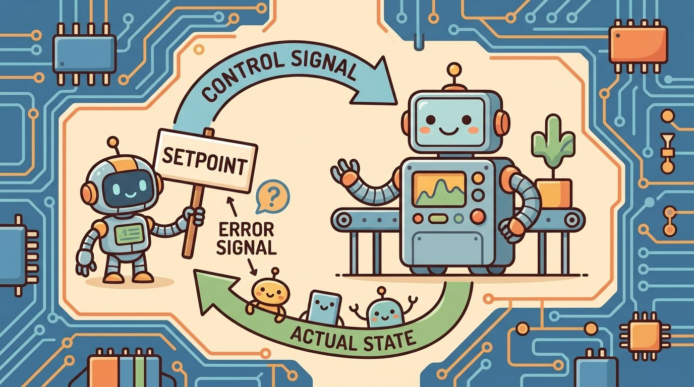
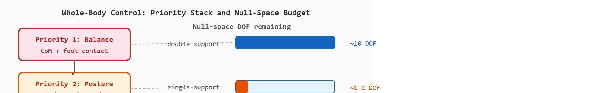
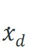
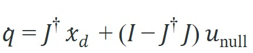
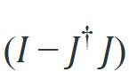
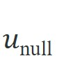
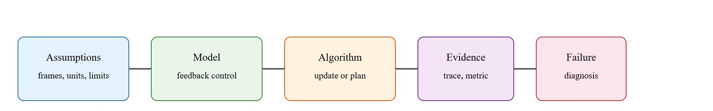

"Move the hand where it needs to go; let the rest of the body sort out how to follow without falling."
A Whole-Body Motion Planner, First Day With a Humanoid

This section assumes familiarity with the Jacobian and forward kinematics from sections 5.6 and 5.7. The priority-stack ideas introduced here are extended in full detail in section 46.3, where the same null-space projection is applied to a complete humanoid during locomotion and manipulation. The connection between operational-space commands and learned motion policies recurs in Part 9 alongside contact-rich manipulation.
A humanoid reaches for a cup while walking. Its 30-plus joints must simultaneously keep the center of mass over the support foot, swing the arm toward the shelf, and not spill. No single joint-angle target describes all of that at once. Operational-space control is the idea that matters: specify where the hand should be in the world, then let the controller sort out which joints move to get there. Whole-body control adds priority so that balance always wins over reach. As of 2024-2025, every serious humanoid platform shipping hardware uses some form of this hierarchy. Understanding it tells you why learned policies trained in simulation can transfer to real bodies, and how to design the motion interface that makes that transfer reliable.
A humanoid told to put its hand on a shelf has 30-plus joints and infinitely many ways to get there, yet only a thin slice of those choices keep it standing: the moment it lifts a foot, the room it had for the reach can collapse to nothing, and the controller will quietly abandon the shelf to save the body, without printing a single error. This section turns that scene from Figure 7.6A into a usable mental model: first the task-space object (a Cartesian hand target on a 30-plus joint body), then the controller that resolves joint motion, then a compact NumPy test of the null-space projection on a 3-link arm.
The key question is concrete: given a 6D Cartesian hand reference and a 28-DoF Atlas-class body, which joint velocities achieve the reach without pushing the center of mass outside the support polygon, where the support polygon is the convex region on the ground spanned by the feet currently in contact, and what log entry reveals when the priority stack silently drops the reach during single-support?
A representation earns its place when it changes the measurable action interface. In Operational-space and whole-body control (preview for humanoids), the reader should keep asking which decision becomes easier, safer, or more reliable.
Why does task-space control exist at all? A humanoid robot asked to "place the cup on the shelf" has 30 or more joints. A joint-coordinate goal forces you to know which combination of shoulder, elbow, wrist, and torso angles places the hand correctly. That inverse problem changes with every posture. Operational-space control inverts it: the designer specifies where the hand should go in Cartesian coordinates, and the controller figures out which joint motions achieve that. The same goal description works whatever the current body configuration, which is why task-space formulations appear in nearly every walking and manipulation system on real humanoid hardware. Whole-body control then asks what happens to the rest of the robot while the hand moves. Without explicit priority, a joint-level optimizer can satisfy the hand goal while letting the center of mass drift outside the support polygon, and the robot falls.
Before going further, it helps to define the tool that makes the inversion above possible: the Jacobian $J(q)$ is the matrix that relates a small change in joint angles to the resulting small change in hand position, and its pseudoinverse $J^\dagger$ (a generalized matrix inverse that works even when the matrix is not square) is what lets the controller answer "which joint motions?" instead of leaving it as an open question. The next paragraphs use both terms before their full mechanics are worked out in the Technical Core section below; this sentence is the bridge between the intuitive picture above and the formal object used from here on.
Because a silent fall is exactly the failure that priority is meant to prevent, the rest depends on being able to see the priorities before they fire. For Operational-space and whole-body control (preview for humanoids), the practical design rule is to make the interface inspectable before optimization begins: inputs, outputs, units, latency, bounds, and failure labels should all be visible in the saved artifact.
Operational-space control asks for motion in task coordinates, such as hand pose, foot force, or center of mass, rather than raw joint coordinates. The Jacobian $J(q)$ maps joint velocity to task velocity, $\dot x=J(q)\dot q$, so the controller can reason about what the robot's body does in the world. Whole-body control adds priority. Balance and contact constraints usually outrank a hand motion, and the remaining degrees of freedom serve posture, joint-limit avoidance, or energy management. To see why priority matters, consider a 28-joint humanoid walking on one foot: the null space (the set of joint motions that produce zero task-space motion, and so are "free" for lower-priority goals) available for arm commands shrinks from roughly 10 dimensions to near zero. A reach command that worked in double support (both feet on the ground, giving a wide support polygon) drops silently in single support (one foot on the ground, giving a narrow one) rather than destabilizing the robot. In practice, a learned policy that must discover this priority on its own from reward typically needs on the order of tens of thousands of rollouts to stop destabilizing itself during single-support transitions, while a policy trained on top of an explicit priority stack that enforces balance first typically converges roughly two orders of magnitude faster, because it never sees the destabilizing cases at all; exact counts vary by task and reward shaping. The diagram below shows the priority stack and how its null-space budget shrinks across support phases.
So far: task-space control lets you specify a Cartesian hand goal instead of joint angles, the Jacobian and its pseudoinverse translate that goal into joint motion, and priority ordering (balance before reach) decides which goals get sacrificed when the null space runs out of room.

A humanoid cannot treat every task as equally important. Foot contact, center of mass, collision margin, and torque limits define the safe feasible set. Arm reaching and expressive motion should live inside the remaining null space, otherwise the robot can satisfy a visible task while losing the body that makes the task possible.
A controller that specifies where the hand should go, then lets the priority stack decide which joints move to get there, is not an approximation of good whole-body control; it is the definition of it.
Consider a specific case: the whole-body controller used on Boston Dynamics Atlas (Kuindersma et al., 2016, "Optimization-based locomotion planning, estimation, and control design for the Atlas humanoid robot") uses a hierarchical QP (Quadratic Program) that places center-of-mass regulation and foot contact forces at the top priority, pelvis orientation second, and arm targets last. On a 28-degree-of-freedom body, the null space available for arm motion during double-support walking is typically on the order of 10 dimensions; during single-support it drops toward zero, so arm references are silently sacrificed to keep balance. That is not a bug but the intended behavior of the priority stack: the safety contract is enforced by construction, not by runtime checks.
The mechanism in Operational-space and whole-body control (preview for humanoids) is the contract between representation and action. Name what enters the module, what leaves it, which assumptions make that transformation valid, and which log would reveal a bad handoff.
The priority stack and shrinking null-space budget described above are not just a diagram; they reduce to a single matrix expression you can run, so the next step is to compute that projection explicitly on a small arm.
Whole-body control resolves task priorities with null-space projection. Given a primary task velocity

and its Jacobian , the joint command is
. The first term meets the primary task; the projector
restricts the secondary objective
to the directions that leave the primary task untouched. Code Fragment 7.6.1 runs this on a planar 3-link arm: the primary task is end-effector motion, the secondary is posture (pulling joints toward a rest pose). It then shows the priority guarantee saturating: once enough independent tasks are stacked, the null space collapses and there is no freedom left for posture.import numpy as np
L = np.array([1.0, 0.8, 0.6]) # planar 3-link arm
def fk_jac(q):
# 2xN Jacobian of end-effector position w.r.t. joint angles.
J, ang = np.zeros((2, 3)), np.cumsum(q)
for i in range(3):
Jx = Jy = 0.0
for k in range(i, 3):
Jx += -L[k] * np.sin(ang[k]); Jy += L[k] * np.cos(ang[k])
J[0, i], J[1, i] = Jx, Jy
return J
q = np.array([0.3, 0.5, -0.4])
J = fk_jac(q)
Jp = np.linalg.pinv(J)
xdot_d = np.array([0.2, 0.0]) # primary: move +x, hold y
u_null = 1.0 * (np.zeros(3) - q) # secondary: pull joints toward rest pose
Nproj = np.eye(3) - Jp @ J # null-space projector of the primary task
qdot = Jp @ xdot_d + Nproj @ u_null
print("primary task error ||J*qdot - xdot_d|| =",
round(float(np.linalg.norm(J @ qdot - xdot_d)), 6))
print("secondary realized in null space, ||N u_null|| =",
round(float(np.linalg.norm(Nproj @ u_null)), 4))
# Stack a third independent task (end-effector orientation): null space saturates.
J3 = np.vstack([J, np.ones((1, 3))]) # x, y, and orientation = sum of joint angles
N3 = np.eye(3) - np.linalg.pinv(J3) @ J3
print("null-space trace with 3 independent tasks =", round(float(np.trace(N3)), 3),
"(0 => no DOF left for posture)")Trace the projector by hand on a tiny case. Take a planar 2-joint arm where, at the current pose, the position Jacobian is the simple $J = \begin{bmatrix} 1 & 0 \\ 0 & 1 \end{bmatrix}$ for the x-component task only, so we use just the first row $J = [1\ \ 0]$ (a 1x2 task: move the hand in x). Desired primary task: $\dot x_d = 0.5$ (move +x at 0.5 units/s).
Step 1, pseudoinverse: $J^\dagger = J^T(JJ^T)^{-1}$. Here $JJ^T = [1]$, so $J^\dagger = [1,\ 0]^T = \begin{bmatrix}1\\0\end{bmatrix}$.
Step 2, primary command: $J^\dagger \dot x_d = \begin{bmatrix}1\\0\end{bmatrix}(0.5) = \begin{bmatrix}0.5\\0\end{bmatrix}$. Joint 1 moves, joint 2 stays still.
Step 3, null-space projector: $N = I - J^\dagger J = \begin{bmatrix}1&0\\0&1\end{bmatrix} - \begin{bmatrix}1\\0\end{bmatrix}[1\ \ 0] = \begin{bmatrix}1&0\\0&1\end{bmatrix} - \begin{bmatrix}1&0\\0&0\end{bmatrix} = \begin{bmatrix}0&0\\0&1\end{bmatrix}$.
Step 4, secondary objective: suppose posture wants $u_\text{null} = [0.3,\ 0.3]^T$. Project it: $N u_\text{null} = \begin{bmatrix}0&0\\0&1\end{bmatrix}\begin{bmatrix}0.3\\0.3\end{bmatrix} = \begin{bmatrix}0\\0.3\end{bmatrix}$. The projector kills the joint-1 component (it would corrupt the x task) and keeps only joint 2.
Step 5, combine: $\dot q = \begin{bmatrix}0.5\\0\end{bmatrix} + \begin{bmatrix}0\\0.3\end{bmatrix} = \begin{bmatrix}0.5\\0.3\end{bmatrix}$. Check: $J\dot q = (1)(0.5)+(0)(0.3) = 0.5 = \dot x_d$ exactly. The secondary objective rode along in joint 2 without touching the primary x task. This is the whole guarantee in two numbers.
A common misconception is that null-space projection lets the robot pursue all tasks simultaneously without sacrifice. Null-space projection guarantees that a secondary objective does not interfere with the primary task, but it does not guarantee that the secondary objective is achieved at all. When the null space collapses, because the robot is in single-support, near a singularity, or stacking too many independent tasks, the lower-priority objective is dropped entirely and silently, not degraded gracefully. The correct mental model is a strict hierarchy with a shrinking budget: balance and contact claim priority first, and arm reach executes only if degrees of freedom remain; a reach command that succeeds in double-support may produce zero motion in single-support with no error message, which is the intended behavior, not a bug.
The fragment should expose task frame, Jacobian, contact constraints, priority, and torque or acceleration command. Whole-body stacks matter only after these control semantics are explicit.
When computing task-space Jacobians with Pinocchio, always call pin.computeJointJacobians(model, data, q) followed by pin.getFrameJacobian(model, data, frame_id, pin.ReferenceFrame.LOCAL_WORLD_ALIGNED) rather than the default LOCAL frame. The LOCAL reference expresses columns in the body frame of the link, so stacking Jacobians for two different end-effectors produces columns in incompatible frames and the null-space projector silently computes garbage. Use LOCAL_WORLD_ALIGNED throughout, verify by checking that the Jacobian's translational rows match a finite-difference of forward kinematics, and only then pass it to the QP solver.
Knowing that a silent null-space collapse is the characteristic failure here, the recipe below is built to surface that failure early rather than discover it on hardware.
The most common failure is a frame mismatch between the task-space Jacobian and the contact constraint. The QP solver receives foot forces in the world frame while the Jacobian columns are computed in a body-local frame. The null-space projector then silently cancels the intended arm motion instead of isolating it. On a real platform this shows up as the arm drifting to a rest pose the moment single-support begins, even though the reach command is still active.
As an illustrative case, a few milliseconds of state-estimation lag at an ankle IMU can corrupt the foot-contact mode flag on a walking humanoid. That flip switches the top-priority constraint from double-support to single-support mid-step and causes the QP to sacrifice the arm reference with no error message. More generally, when a whole-body QP runs at a higher rate in simulation than the real motor controllers can sustain, the resulting command gap accumulates into millimeter-scale end-effector drift over a multi-second reach, a discrepancy that typically does not appear in simulation. Always verify that the Jacobian reference frame, the contact-mode source, and the actuator command rate match between the simulator and the hardware target before trusting a task-space trajectory.
A robotics team using Operational-space and whole-body control (preview for humanoids) should log not only final success, but intermediate observations, chosen actions, controller status, and recovery events. The logs reveal whether the method is solving the task or merely passing the easiest episodes.
Apptronik's Apollo humanoid, deployed in Mercedes-Benz assembly trials in 2024, exposes Cartesian hand targets to its task layer while an on-board whole-body QP resolves them to joint torques at 1 kHz, keeping the center of mass over the support polygon as the torso bends to pick a part. The same operational-space interface lets the perception stack say "grasp the bin here" without ever reasoning about the 30-plus joint angles. When a lift forces single-support, the priority stack quietly trims arm reach to preserve balance, exactly the silent drop described above.
Treat operational-space and whole-body control (preview for humanoids) like a control-room label. If the label does not tell a future debugger what moved, what sensed, or what failed, it is decoration rather than engineering knowledge.
1. Learning whole-body control from human motion capture (2024-2026). Rather than hand-coding a priority hierarchy, recent work trains a whole-body controller directly from retargeted human mocap data. PHC+ (Luo et al., NeurIPS 2024, "Perpetual Humanoid Control for Real-time Simulated Avatars") demonstrates a single policy controlling a 69-DoF body across acrobatics, locomotion, and manipulation-like reaches purely from reference motions, without an explicit null-space stack. The frontier question is how to inject hard contact and torque constraints into these learned controllers without reverting to the full analytical QP.
2. Hierarchical QP with neural task priorities (2024-2026). Classical whole-body QPs require a designer to hard-code the priority ordering. Groups at ETH Zurich (Reske et al., RAL 2024, "Learning Hierarchical Control for Legged Manipulation") and CMU are training neural networks to output the priority weights and task references simultaneously, so the robot learns when balance should yield to reach rather than always subordinating reach to balance. The result is more natural coordination on uneven terrain but introduces stability certificates that are much harder to verify offline.
3. Real-time whole-body teleoperation with operational-space interfaces (2024-2026). Systems like Figure 02 and Apptronik Apollo (demonstrated publicly 2024-2025) expose Cartesian hand and pelvis targets as the teleoperation API, resolving them to joint torques at 500 Hz on-board. Stanford and Berkeley groups (Chi et al., RSS 2024, "Universal Manipulation Interface") are studying how the choice of operational-space interface affects the data efficiency of downstream imitation learning, treating the WBC (Whole-Body Controller) as a fixed inner loop and learning only the task-space reference generator.
Open problem for a PhD student. Every current whole-body controller assumes the contact mode (which feet are on the ground and where) is known from a separate estimator. When that estimator is wrong by even one cycle at 500 Hz, the top-priority constraint flips and the arm reference is silently dropped. A tractable dissertation problem is to design a WBC formulation that is robust to contact-mode uncertainty: one approach is to maintain a small set of candidate modes and solve a robust QP that is feasible under all of them simultaneously, trading some task-space performance for guaranteed stability under misclassification.
Can you name the observation, state estimate, action, success metric, and most likely failure mode for Operational-space and whole-body control (preview for humanoids)? If not, the system boundary is still too vague.
Operational-space and whole-body control sits inside the Part II robotics contract: geometry fixes where things are, kinematics what motion is possible, dynamics what motion costs, control how errors are corrected, and sensing what the agent can know in time.
Operational-space control must name task priorities, contact assumptions, and null-space behavior. The idea has an intuitive role, a formal interface, a runnable check, and a reproducible failure mode.
For Operational-space and whole-body control (preview for humanoids), control closes the loop between estimated state and action. Keep reference, measured state, error signal, control law, actuator limits, and safety fallback separate in the evidence record.
| Tool or Library | What It Handles | Verification Check |
|---|---|---|
| python-control | analyzes linear systems, transfer functions, state-space models, and feedback loops | Verify units, sample time, poles, stability margin, and reference scaling. |
| CasADi | formulates optimization-based controllers with constraints and horizons | Verify constraints, warm start, solver status, and deadline behavior. |
| Drake | models dynamical systems, multibody plants, optimization, and controllers | Verify scalar type, plant finalization, frame convention, and solver status. |
| do-mpc | formulates optimization-based controllers with constraints and horizons | Verify constraints, warm start, solver status, and deadline behavior. |
| ROS 2 control | supports practical work on Operational-space and whole-body control (preview for humanoids) | Verify the library output against the hand-built baseline on one small case. |
Use this recipe when turning Operational-space and whole-body control (preview for humanoids) into code, a simulator experiment, or a robot diagnostic. The point is not to use every library. The point is to keep the hand-built baseline and the maintained-tool path comparable.
For Operational-space and whole-body control (preview for humanoids), compare methods only through one saved artifact that preserves the inputs, outputs, units, timestamps, latency budget, configuration, seed, metric definition, and failure labels relevant to this section. The comparison is meaningful only when the same script evaluates the same panel.
Extend the section exercise by adding one perturbation specific to Operational-space and whole-body control (preview for humanoids) and one latency or uncertainty check. Save the result in the EvidenceRecord schema, then explain which library output you trust and why.
A learned policy can hide a whole-body priority conflict until contact changes. Check frame conventions, Jacobian ordering, contact mode, torque limits, null-space projection, and fallback behavior before scaling training. For this section, first reproduce one small task-space command by hand, then rerun it through Drake, Pinocchio, MuJoCo, or the robot controller stack. If the two disagree, inspect frame transforms, contact assumptions, and which lower-priority task was sacrificed.
What exactly happens when you hand a 30-joint humanoid a single Cartesian target and walk away? The math below answers that question concretely.
Operational-space and whole-body control (preview for humanoids) needs a topic-native core: variables, equations or system contracts, an algorithmic procedure, an expected output, and a failure diagnosis. Figure 7.6.T summarizes the chain this section must preserve when moving from a teaching example to a real embodied system.

Task velocity obeys $\dot x=J(q)\dot q$. A common whole-body controller solves for joint accelerations, torques, or velocities that reduce task error while satisfying contact, torque, and joint constraints. Lower-priority objectives are projected into the null space of higher-priority tasks so posture improvement does not break balance or contact.
The pseudoinverse $J^\dagger$ matters in embodied AI because a humanoid has more joints than task dimensions, so a regular matrix inverse does not exist. Choosing the wrong solution from the infinite set of valid joint velocities can silently saturate a joint, violate a torque limit, or position a limb near a kinematic singularity, causing the next control step to fail. The minimum-norm solution $J^\dagger \dot x_d$ avoids these outcomes by distributing motion across all available joints rather than concentrating it in a subset.
Mechanically, $J^\dagger = J^T(JJ^T)^{-1}$ for a full-row-rank Jacobian. It finds the unique joint velocity vector of smallest Euclidean length that exactly achieves the desired task velocity. When $J$ loses rank near a kinematic singularity, the pseudoinverse amplifies small task errors into large joint commands; a damped pseudoinverse $J^T(JJ^T + \lambda^2 I)^{-1}$ limits this amplification at the cost of slight task-space error, which is the standard safety trade-off on real hardware.
Think of seasoning a pot of soup shared among several cooks. There are many ways to reach the target saltiness: one cook could dump in a large handful while the others do nothing, or each cook could add a small pinch. The pseudoinverse is the "small pinch each" solution. It distributes the required change as evenly as possible across every available joint, rather than demanding heroic motion from one while the others idle. That even distribution keeps every joint well away from its limit, exactly as spreading seasoning duties prevents one cook from over-salting a single ladle.
| Contract Field | What To Specify | Why It Matters |
|---|---|---|
| State and observation | Variables, units, timestamps, frames, and uncertainty. | Prevents a model score from being mistaken for robot capability. |
| Action interface | Command type, limits, update rate, and safety fallback. | Makes the learned or planned output executable. |
| Evidence artifact | Trace, metric, configuration, seed, and failure label. | Allows baseline and library path to be compared in one pass. |
| Tool path | python-control, CasADi, do-mpc, Drake, ROS 2 control, MuJoCo | Shows the practical library route after the mechanism is understood. |
For Operational-space and whole-body control (preview for humanoids), expected output is a trace where the relevant error decreases, overshoot stays within the design bound, and actuator commands remain within limits under the stated timing budget.
Operational-space and whole-body control (preview for humanoids) should be stress-tested under delay, integral windup, actuator saturation, unmodeled friction, and reference-frame mismatch before the nominal trace is trusted.
Core references for Operational-space and whole-body control (preview for humanoids): Modern Robotics; Murray, Li, and Sastry; Siciliano et al.; LaValle; and official documentation for Drake, MuJoCo, Pinocchio, CasADi, python-control, GTSAM, ROS 2, and OpenCV as applicable.
Use these references to check notation, frame conventions, units, solver assumptions, and maintained-library behavior.
Operational-space and whole-body control (preview for humanoids) is useful when it makes the perception-action loop more reliable, not when it merely adds a more impressive model name.
Design a method-matched experiment for Operational-space and whole-body control (preview for humanoids). Specify the environment, observations, actions, metric, one perturbation, and the library output you would compare against the hand-built baseline.
Goal. Empirically confirm that a secondary posture task survives only while the null space has room, and that stacking tasks silently kills it, the central claim of this section.
Tools needed. Python with mujoco (pip install mujoco) and numpy. Use the built-in arm-style model or a simple 3-link planar arm MJCF (about 20 lines of XML); no robot hardware required. Budget 15 to 30 minutes.
Procedure. Load the model, read the end-effector Jacobian each step with mujoco.mj_jac, and compute $\dot q = J^\dagger \dot x_d + (I - J^\dagger J)\,u_\text{null}$ as in Code Fragment 7.6.1. Set the primary task to hold the hand at a fixed Cartesian point and the secondary task to pull all joints toward a rest pose.
What to vary. (1) The number of stacked primary task rows: start with position only (2 rows on a 3-joint arm), then add orientation (3 rows). (2) The damping $\lambda$ in a damped pseudoinverse $J^T(JJ^T+\lambda^2 I)^{-1}$, sweeping from 0 to 0.1. (3) Drive the arm toward an outstretched, near-singular pose.
What to observe. Log $\operatorname{trace}(I - J^\dagger J)$ each step (the remaining null-space dimension) and the norm $\lVert (I-J^\dagger J)u_\text{null}\rVert$ of the realized posture motion. You should see the trace fall toward zero and posture motion vanish as you add the third task or approach singularity, while a small $\lambda$ caps the joint-velocity spikes near the singularity at the cost of a tiny primary-task error. That trade-off is the damped-pseudoinverse safety story made measurable.
Beginner (weekend): null-space posture controller in MuJoCo. Build a 3-DOF planar arm in MuJoCo and implement the null-space projector from Code Fragment 7.6.1, driving the end-effector to a fixed target while pulling joints toward a rest pose. The key challenge is verifying that the primary task error stays at zero while the secondary posture objective actually uses leftover degrees of freedom rather than interfering with the end-effector goal.
Intermediate (1-2 weeks): priority-stack whole-body controller on a simulated humanoid in Isaac Lab. Load a Unitree H1 or similar humanoid in Isaac Lab and implement a two-level hierarchical QP: center-of-mass regulation at top priority, one-arm reaching at second priority. The key challenge is keeping all Jacobians in a consistent world-aligned frame (the frame-mismatch failure described above is easy to trigger) and confirming that the arm reference is silently dropped during single-support without destabilizing the robot.
Intermediate (1-2 weeks): sim-to-real task-space policy with LeRobot and ROS2. Train a learned policy in MuJoCo that outputs end-effector Cartesian velocity commands rather than raw joint commands, publish those commands over ROS2, and resolve them to joint velocities on a 6-DOF arm using a Pinocchio Jacobian. The key challenge is closing the control loop at a consistent rate across the ROS2 communication boundary and confirming that the sim Jacobian frame conventions match the real robot URDF.